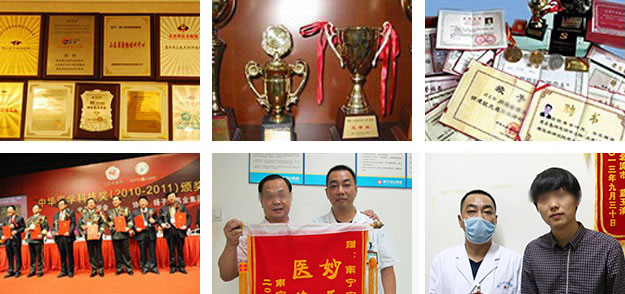

由中国国际医学研究会(CIMRC)发起，中国国际医学研究会、人民日报社《健康时报》共同举办的"2011中国生殖性病医学大会暨全国生殖性病新进展与国际规范诊疗技术研讨会"，于2011年9月23-25日在北京盛大召开，来自全国各地400余名代表出席聆听了会议。
会上，中国国际医学研究会表彰了南宁中山医院的刘伟主任在性病治疗方面做出的突出贡献。
在2010~2011这一年里，南宁中山医院的刘金波专家熟练的将基因抑制生物免疫技术应用于临床，已成功治愈了152369例患者，无一例复发。使这一技术得到成功、有效的推广。鉴于南宁中山医院专家刘金波在性病诊疗领域做出的突出贡献，中国国际医学研究会为其颁发了中国生殖性病年度学术奖。
南宁中山医院性病科主任与全国著名专家应邀出席
中科院专家讲解基因抑制生物免疫技术，并将其授予于南宁中山医院
南宁中山医院性病科主任与全国著名专家应邀出席
中科院专家讲解基因抑制生物免疫技术，并将其授予于南宁中山医院
中华医学会生殖性病分会邀请刘伟主任发言
中华医学会专业委员为刘伟主任颁发荣誉证书
多家媒体对南宁中山医院性病专家刘金波进行采访
会议结束后，刘金波专家与全国著名学者合影留念
李先生，30岁，间接接触感染尖锐湿疣。据患者表示，配偶与本人均无婚外性行为。发病初期，认为是细菌感染，因此并未采取任何措施...【详情】
患者庞女士，30岁。2011年11月感染尖锐湿疣，曾至南宁几家综合医院就医，均在疗后再度复发。治疗期间，与配偶离异......【详情】
郑先生，35岁，2014年2月感染生殖器疱疹。据患者本人表示，之前有过不洁性行为，可能因此而患病。曾至多家综合医院接受治疗4次...【详情】
张小姐，23岁，生殖器疱疹间接接触感染患者，未婚且无任何性经验。发病初期，认为是一般感染，没有去医院进行检查，而是去买了一些药膏进行涂抹。一段时间后...【详情】
 |
 |
 |
 |
 |
 |
 |

 0771-3106205
0771-3106205
医院地址：南宁市安吉大道28号（苏芦农贸市场旁）
咨询电话：0771-3106205 QQ：1308830786
任何网络建议都不能替代执业医师当面诊断，网友、医生言论仅代表其个人观点，不代表本站同意其说法。

0771-310620524小时免费咨询电话

8:00-20:00南宁中山专家无休坐诊
 尖锐湿疣
尖锐湿疣